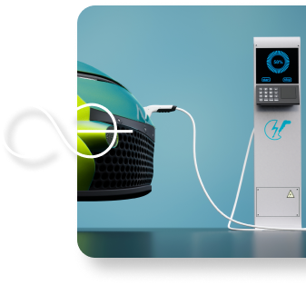

2021 P4G Summit Seoul
MENU특별세션장
5.24 ~ 5.29
녹색미래주간(5.24~5.29) 기간 중 개최되는 총 10개의
특별세션은 최근 기후·환경 관련 국제사회의 논의 흐름과,
우리나라의 정책적 관심사 등을
종합적으로 고려하여 기획되었습니다.
특별세션은 최근 기후·환경 관련 국제사회의 논의 흐름과,
우리나라의 정책적 관심사 등을
종합적으로 고려하여 기획되었습니다.
특별세션에는 각국 정부, 국제기구, 기업, 학계 저명인사 등 기후환경과 관련된 여러 분야 전문가들이 참여하여, 2021 P4G 서울 정상회의의 대주제인“포용적인 녹색회복을 통한 탄소중립 비전 실현”을 토대로 세션별 다양한 세부 주제를 설정, 이에 대해 심층적인 논의를 진행합니다.
총 10개의 특별세션은 탄소중립실천, 그린뉴딜, 시민사회,
해양, 생물다양성, 비즈니스포럼, 녹색기술, 산림,
녹색금융, 미래세대 세션으로 구성되어 있으며, “2021 P4G
서울 정상회의 가상회의 플랫폼”을 통해 대내외에 공개될
예정으로 국민 여러분들께서 자유롭게 시청할 수 있습니다.



ⓒPark SangHoon
 VOD
VOD